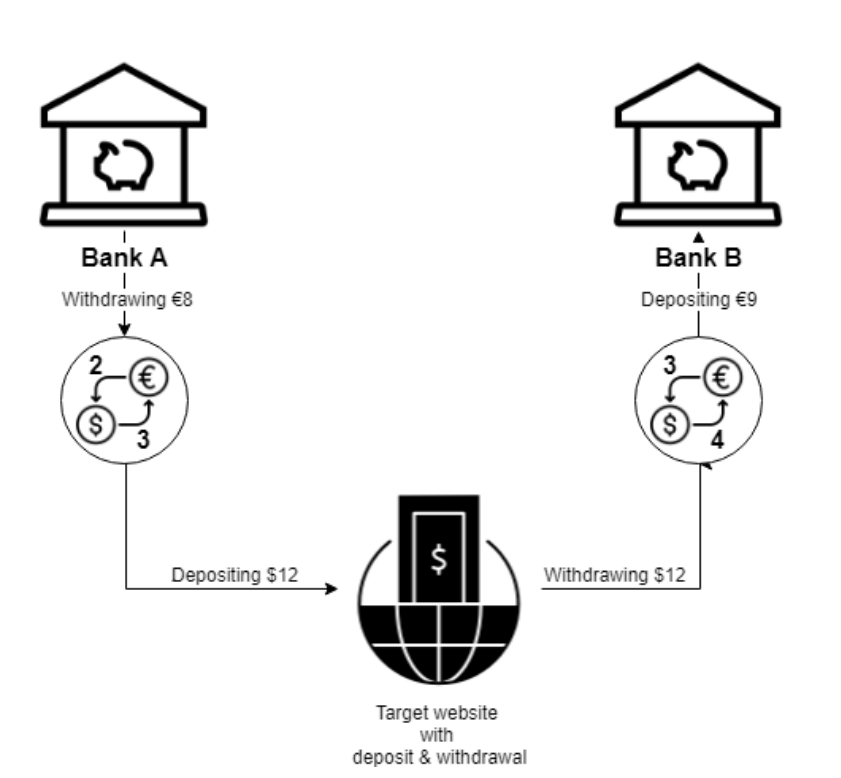

Если приложение электронной коммерции поддерживает различные платежные методы с разными валютами, кто-то может внести деньги в одной валюте и вывести их в другой. Арбитраж возникает, когда методы внесения и вывода различны (например, использование компании кредитных карт для внесения денег и PayPal для вывода) и они используют несовместимые обменные курсы.
Например, представьте сторонний веб-сайт, который поддерживает два разных типа платежей (назовем их Банк A и Банк B) для внесения или вывода денег на сайт или с сайта. Обменный курс USD-to-EUR с комиссией составляет 3/2 (дает $3 за €2) с использованием Банка A, а обменный курс EUR-to-USD составляет 3/4 с использованием Банка B (дает €3 за $4). Внеся 8 евро на сайт с использованием Банка A, будет внесено 12 долларов (курс обмена = 3/2). Теперь, сняв эти 12 долларов с сайта и внеся их в Банк B, пользователю будет зачислено 9 евро (курс обмена = 3/4). Это дает один дополнительный евро пользователю, который изначально внес на сайт только 8 евро.
Рисунок 9: Эксплуатация валютного арбитража
Более сложная проблема может возникнуть, когда финансовое приложение поддерживает перевод денег с разными валютами, так как можно использовать арбитраж с несколькими валютами (например, треугольный арбитраж), когда комиссионные сборы незначительны.
Редко можно увидеть эту уязвимость среди банковских и торговых приложений из-за использования высокоскоростных компьютерных сетей, которые могут предупредить их о закрытии разрыва, когда может произойти арбитраж [3]. Однако приложение электронной коммерции, которое медленно обновляет свой обменный курс, может стать жертвой этого метода эксплуатации.